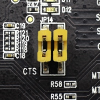

ESP-WROVER-KIT¶
Overview¶
ESP-WROVER-KIT is an ESP32-based development board produced by Espressif.
ESP-WROVER-KIT features the following integrated components:
ESP32-WROVER-E module
LCD screen
MicroSD card slot
Its another distinguishing feature is the embedded FTDI FT2232HL chip - an advanced multi-interface USB bridge. This chip enables to use JTAG for direct debugging of ESP32 through the USB interface without a separate JTAG debugger. ESP-WROVER-KIT makes development convenient, easy, and cost-effective.
Most of the ESP32 I/O pins are broken out to the board’s pin headers for easy access.
Note
ESP32’s GPIO16 and GPIO17 are used as chip select and clock signals for PSRAM. By default, the two GPIOs are not broken out to the board’s pin headers in order to ensure reliable performance.
Functionality Overview¶
The block diagram below shows the main components of ESP-WROVER-KIT and their interconnections.

Functional Description¶
The following two figures and the table below describe the key components, interfaces, and controls of the ESP-WROVER-KIT board.
Fig. 186 ESP-WROVER-KIT board layout - front¶

Fig. 187 ESP-WROVER-KIT board layout - back¶
The table below provides description in the following manner: - Starting from the first picture’s top right corner and going clockwise - Then moving on to the second picture
Key Component |
Description |
|---|---|
FT2232 |
The FT2232 chip serves as a multi-protocol USB-to-serial bridge which can be programmed and controlled via USB to provide communication with ESP32. FT2232 also features USB-to-JTAG interface which is available on channel A of the chip, while USB-to- serial is on channel B. The FT2232 chip enhances user-friendliness in terms of application development and debugging. See ESP-WROVER-KIT V4.1 schematic. |
32.768 kHz |
External precision 32.768 kHz crystal oscillator serves as a clock with low-power consumption while the chip is in Deep-sleep mode. |
0R |
Zero-ohm resistor intended as a placeholder for a current shunt, can be desoldered or replaced with a current shunt to facilitate the measurement of ESP32’s current consumption in different modes. |
ESP32-WROVER-E module |
This ESP32 module features 64-Mbit PSRAM for flexible extended storage and data processing capabilities. |
Diagnostic LEDs |
Four red LEDs connected to the GPIO pins of FT2232. Intended for future use. |
UART |
Serial port. The serial TX/RX signals of FT2232 and ESP32 are broken out to the inward and outward sides of JP2 respectively. By default, these pairs of pins are connected with jumpers. To use ESP32’s serial interface, remove the jumpers and connect another external serial device to the respective pins. |
SPI |
By default, ESP32 uses its SPI interface to access flash and PSRAM memory inside the module. Use these pins to connect ESP32 to another SPI device. In this case, an extra chip select (CS) signal is needed. Please note that the voltage of this interface is 3.3 V. |
CTS/RTS |
Serial port flow control signals: the pins are not connected to the circuitry by default. To enable them, short the respective pins of JP14 with jumpers. |
JTAG |
JTAG interface. JTAG signals of FT2232 and ESP32 are broken out to the inward and outward sides of JP2 respectively. By default, these pairs of pins are disconnected. To enable JTAG, short the respective pins with jumpers as shown in Section Setup Options |
USB Port |
USB interface. Power supply for the board as well as the communication interface between a computer and the board. |
EN Button |
Reset button. |
BOOT Button |
Download button. Holding down Boot and then pressing EN initiates Firmware Download mode for downloading firmware through the |
Power Switch |
Power On/Off Switch. Toggling toward the Boot button powers the board on, toggling away from Boot powers the board off. |
Power Selector |
Power supply selector interface. The board can be powered either via USB or via the 5V Input interface. Select the power source with a jumper. For more details, see Section Setup Options, jumper header JP7. |
5V input |
5V power supply interface for a standard coaxial power connector, 5.5 x 2.1 mm, center positive. This interface can be more convenient when the board is operating autonomously (not connected to a computer). |
5V Power On LED |
This red LED turns on when power is supplied to the board, either from USB or 5V Input. |
LDO |
NCP1117(1A). 5V-to-3.3V LDO. NCP1117 can provide a maximum current of 1A. The LDO on the board has a fixed output voltage. Although, the user can install an LDO with adjustable output voltage. For details, please refer to ESP-WROVER-KIT V4.1 schematic. |
Camera Connector |
Camera interface, a standard OV7670 camera module. |
RGB LED |
Red, green and blue (RGB) light emitting diodes (LEDs), can be controlled by pulse width modulation (PWM). |
I/O Connector |
All the pins on the ESP32 module are broken out to pin headers. You can program ESP32 to enable multiple functions, such as PWM, ADC, DAC, I2C, I2S, SPI, etc. |
MicroSD Card Slot |
Useful for developing applications that access MicroSD card for data storage and retrieval. |
LCD |
Support for mounting and interfacing a 3.2” SPI (standard 4-wire Serial Peripheral Interface) LCD, as shown on figure ESP-WROVER-KIT board layout - back |
Setup Options¶
There are three jumper blocks available to set up the board functionality. The most frequently required options are listed in the table below.
Header | Jumper Setting | Description of Functionality |
|||
|---|---|---|---|
JP7 |
|
Power ESP-WROVER-KIT via an external power supply |
|
JP7 |
|
Power ESP-WROVER-KIT via USB |
|
JP2 |
|
Enable JTAG functionality |
|
JP2 |
|
Enable UART communication |
|
JP14 |
 |
Enable RTS/CTS flow control for serial communication |
|


Allocation of ESP32 Pins¶
Some pins / terminals of ESP32 are allocated for use with the onboard or external hardware. If that hardware is not used, e.g., nothing is plugged into the Camera (JP4) header, then these GPIOs can be used for other purposes.
Some of the pins, such as GPIO0 or GPIO2, have multiple functions and some of them are shared among onboard and external peripheral devices. Certain combinations of peripherals cannot work together. For example, it is not possible to do JTAG debugging of an application that is using SD card, because several pins are shared by JTAG and the SD card slot.
In other cases, peripherals can coexist under certain conditions. This is applicable to, for example, LCD screen and SD card that share only a single pin GPIO21. This pin is used to provide D/C (Data / Control) signal for the LCD as well as the Card Detect signal read from the SD card slot. If the card detect functionality is not essential, then it may be disabled by removing R167, so both LCD and SD may operate together.
For more details on which pins are shared among which peripherals, please refer to the table in the next section.
Main I/O Connector / JP1¶
The JP1 connector consists of 14x2 male pins whose functions are shown in the middle two “I/O” columns of the table below. The two “Shared With” columns on both sides describe where else on the board a certain GPIO is used.
Shared With |
I/O |
I/O |
Shared With |
|---|---|---|---|
n/a |
3.3V |
GND |
n/a |
NC/XTAL |
IO32 |
IO33 |
NC/XTAL |
JTAG, MicroSD |
IO12 |
IO13 |
JTAG, MicroSD |
JTAG, MicroSD |
IO14 |
IO27 |
Camera |
Camera |
IO26 |
IO25 |
Camera, LCD |
Camera |
IO35 |
IO34 |
Camera |
Camera |
IO39 |
IO36 |
Camera |
JTAG |
EN |
IO23 |
Camera, LCD |
Camera, LCD |
IO22 |
IO21 |
Camera, LCD, MicroSD |
Camera, LCD |
IO19 |
IO18 |
Camera, LCD |
Camera, LCD |
IO5 |
IO17 |
PSRAM |
PSRAM |
IO16 |
IO4 |
LED, Camera, MicroSD |
Camera, LED, Boot |
IO0 |
IO2 |
LED, MicroSD |
JTAG, MicroSD |
IO15 |
5V |
Legend:
NC/XTAL - 32.768 kHz Oscillator
JTAG - JTAG / JP2
Boot - Boot button / SW2
Camera - Camera / JP4
LED - RGB LED
MicroSD - MicroSD Card / J4
LCD - LCD / U5
PSRAM - ESP32-WROVER-E’s PSRAM
32.768 kHz Oscillator¶
. |
ESP32 Pin |
|---|---|
1 |
GPIO32 |
2 |
GPIO33 |
Note
Since GPIO32 and GPIO33 are connected to the oscillator by default, they are not connected to the JP1 I/O connector to maintain signal integrity. This allocation may be changed from the oscillator to JP1 by desoldering the zero-ohm resistors from positions R11 / R23 and re- soldering them to positions R12 / R24.
SPI Flash / JP2¶
. |
ESP32 Pin |
|---|---|
1 |
CLK / GPIO6 |
2 |
SD0 / GPIO7 |
3 |
SD1 / GPIO8 |
4 |
SD2 / GPIO9 |
5 |
SD3 / GPIO10 |
6 |
CDM / GPIO11 |
Important
The module’s flash bus is connected to the jumper block JP2 through zero-ohm resistors R140 ~ R145. If the flash memory needs to operate at the frequency of 80 MHz, for reasons such as improving the integrity of bus signals, you can desolder these resistors to disconnect the module’s flash bus from the pin header JP2.
JTAG / JP2¶
. |
ESP32 Pin |
JTAG Signal |
|---|---|---|
1 |
EN |
TRST_N |
2 |
MTMS / GPIO14 |
TMS |
3 |
MTDO / GPIO15 |
TDO |
4 |
MTDI / GPIO12 |
TDI |
5 |
MTCK / GPIO13 |
TCK |
Camera / JP4¶
. |
ESP32 Pin |
Camera Signal |
|---|---|---|
1 |
n/a |
3.3V |
2 |
n/a |
Ground |
3 |
GPIO27 |
SIO_C / SCCB Clock |
4 |
GPIO26 |
SIO_D / SCCB Data |
5 |
GPIO25 |
VSYNC / Vertical Sync |
6 |
GPIO23 |
HREF / Horizontal Reference |
7 |
GPIO22 |
PCLK / Pixel Clock |
8 |
GPIO21 |
XCLK / System Clock |
9 |
GPIO35 |
D7 / Pixel Data Bit 7 |
10 |
GPIO34 |
D6 / Pixel Data Bit 6 |
11 |
GPIO39 |
D5 / Pixel Data Bit 5 |
12 |
GPIO36 |
D4 / Pixel Data Bit 4 |
13 |
GPIO19 |
D3 / Pixel Data Bit 3 |
14 |
GPIO18 |
D2 / Pixel Data Bit 2 |
15 |
GPIO5 |
D1 / Pixel Data Bit 1 |
16 |
GPIO4 |
D0 / Pixel Data Bit 0 |
17 |
GPIO0 |
RESET / Camera Reset |
18 |
n/a |
PWDN / Camera Power Down |
Signals D0 .. D7 denote camera data bus
RGB LED¶
. |
ESP32 Pin |
RGB LED |
|---|---|---|
1 |
GPIO0 |
Red |
2 |
GPIO2 |
Green |
3 |
GPIO4 |
Blue |
MicroSD Card¶
. |
ESP32 Pin |
MicroSD Signal |
|---|---|---|
1 |
MTDI / GPIO12 |
DATA2 |
2 |
MTCK / GPIO13 |
CD / DATA3 |
3 |
MTDO / GPIO15 |
CMD |
4 |
MTMS / GPIO14 |
CLK |
5 |
GPIO2 |
DATA0 |
6 |
GPIO4 |
DATA1 |
7 |
GPIO21 |
Card Detect |
LCD / U5¶
. |
ESP32 Pin |
LCD Signal |
|---|---|---|
1 |
GPIO18 |
RESET |
2 |
GPIO19 |
SCL |
3 |
GPIO21 |
D/C |
4 |
GPIO22 |
CS |
5 |
GPIO23 |
SDA |
6 |
GPIO25 |
SDO |
7 |
GPIO5 |
Backlight |
Start Application Development¶
Before powering up your ESP-WROVER-KIT, please make sure that the board is in good condition with no obvious signs of damage.
Initial Setup¶
Please set only the following jumpers shown in the pictures below:
Select USB as the power source using the jumper block JP7.
Enable UART communication using the jumper block JP2.
Power up from USB port |
Enable UART communication |
|
|---|---|---|
|
|
|
Do not install any other jumpers.
Turn the Power Switch to ON, the 5V Power On LED should light up.
System requirements¶
Build Environment Setup¶
Some variables must be exported into the environment prior to building this port. Find more information at Environment Variables on how to keep this settings saved in you environment.
Note
In case of manual toolchain installation, set ESPRESSIF_TOOLCHAIN_PATH accordingly.
Otherwise, set toolchain path as below. If necessary.
On Linux and macOS:
export ZEPHYR_TOOLCHAIN_VARIANT="espressif"
export ESPRESSIF_TOOLCHAIN_PATH="${HOME}/.espressif/tools/zephyr"
On Windows:
# on CMD:
set ESPRESSIF_TOOLCHAIN_PATH=%USERPROFILE%\.espressif\tools\zephyr
set ZEPHYR_TOOLCHAIN_VARIANT=espressif
# on PowerShell
$env:ESPRESSIF_TOOLCHAIN_PATH="$env:USERPROFILE\.espressif\tools\zephyr"
$env:ZEPHYR_TOOLCHAIN_VARIANT="espressif"
Finally, retrieve required submodules to build this port. This might take a while for the first time:
west espressif update
Note
It is recommended running the command above after west update so that submodules also get updated.
Flashing¶
The usual flash target will work with the esp_wrover_kit board
configuration. Here is an example for the Hello World
application.
# From the root of the zephyr repository
west build -b esp_wrover_kit samples/hello_world
west flash
Refer to Building an Application and Run an Application for more details.
It’s impossible to determine which serial port the ESP-WROVER-KIT board is
connected to, as it uses a generic RS232-USB converter. The default of
/dev/ttyUSB1 is provided as that’s often the assigned name on a Linux
machine without any other such converters.
The baud rate of 921600bps is recommended. If experiencing issues when flashing, try halving the value a few times (460800, 230400, 115200, etc).
All flashing options are now handled by the West (Zephyr’s meta-tool) tool, including flashing
with custom options such as a different serial port. The west tool supports
specific options for the ESP32-S2 board, as listed here:
- --esp-idf-path ESP_IDF_PATH
path to ESP-IDF
- --esp-device ESP_DEVICE
serial port to flash, default $ESPTOOL_PORT if defined. If not, esptool will loop over available serial ports until it finds ESP32 device to flash.
- --esp-baud-rate ESP_BAUD_RATE
serial baud rate, default 921600
- --esp-flash-size ESP_FLASH_SIZE
flash size, default “detect”
- --esp-flash-freq ESP_FLASH_FREQ
flash frequency, default “40m”
- --esp-flash-mode ESP_FLASH_MODE
flash mode, default “dio”
- --esp-tool ESP_TOOL
if given, complete path to espidf. default is to search for it in
[ESP_IDF_PATH]/components/esptool_py/ esptool/esptool.py- --esp-flash-bootloader ESP_FLASH_BOOTLOADER
Bootloader image to flash
- --esp-flash-partition_table ESP_FLASH_PARTITION_TABLE
Partition table to flash
For example, to flash to /dev/ttyUSB2, use the following command after
having build the application in the build directory:
west flash -d build/ --skip-rebuild --esp-device /dev/ttyUSB2